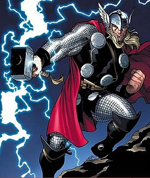

Thor
Cупергерой комиксов издательства Marvel Comics.
Персонаж основан на образе одноимённого бога из германо-скандинавской мифологии. Его авторы в Marvel — редактор Стэн Ли, сценарист Ларри Либер и художник Джек Кёрби, а первое появление приходится на комикс Journey into Mystery #83 (1962), который позже сменил название на «The Mighty Thor».
В 2012 году IGN поместил его на 1-е место в «Топе 50 лучших Мстителей»[2]. В мае 2011 года Тор занял 14 место в списке 100 лучших героев комиксов по версии IGN.
В 2011 году на экраны вышел одноимённый полнометражный фильм с Крисом Хемсвортом в главной роли[3]. Актёр также согласился сняться в роли своего героя в фильме «Мстители» (2012) о приключениях команды супергероев, в которую в комиксах входил и Тор[4].

- Тор
- Громобой
- Бета Рэй Билл
- Тор (Дарго Ктор)
- Фэндрал